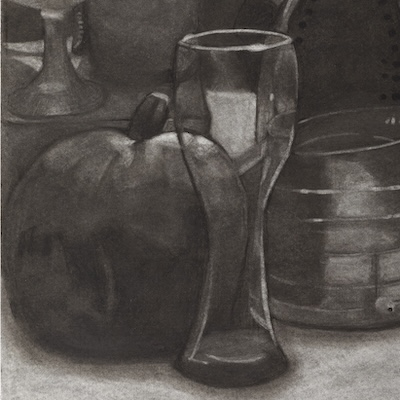

Art Pro
Created by Natalie Alcantara

The power to create art is inspiring to me, with the skills and knowledge to display each one. Everyone can draw and create however it takes a lot to display for the world to judge. With how negative the world can get, I wonder how I can bring out different thoughts from the viewers of my work with hispanic blood flowing through me.
From a young age to now, I have seen different artists making art with different/same media as others. Carmen Lomas Garza inspired me to create, she is the creator of Family Pictures/Cuadros de Familia, In My Family/En mi familiar, and more books as well as paintings and more. She explains about her family throughout her childhood and throws her eyes with hints of what an adult would notice. Not only does she write this story in English but also in Spanish. When I was a child, I loved to stare at all the little details Mrs Garza puts into the work. Even though I didn;t understand most of the meaning, I love how close to home I felt because my family is similar to the books. I find her work wonderful and I want to be able to display my family and experience into my art. From ancestors from the past to what affects my hispanic heritage. To work with different media is exciting to me, while I do turn to charcoal supplies to begin the idea. Finding the color within the darkness is amazing. I am still learning which media I like best and love each process.
As I type this, I plan to create a portrait of my late grandmother for Día de Muertos (day of the dead) and display a La ofrenda for many to learn the kind of woman she was. I want to learn more about my hispanic background and how I can bring that into art. Living within America can be helpful, but nothing like Mexico. So no matter how bad things get, I’ll continue to create art no matter the pain and time my dedication will forever be strong.